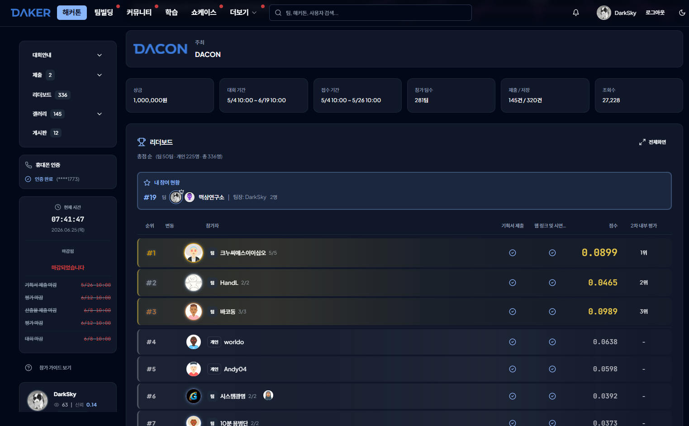

150/150
WBS 태스크 완료 (100%)
13/100
AI-Readiness 점수 (AI-Hostile)
대회 결과
| 항목 | 내용 |
|---|
| 최종 순위 | 336명 중 19위 (개인 225명 + 팀 50팀) |
| 참가 팀 | 떡상연구소 (팀장: DarkSky, 2인) |
| 평가 단계 | 1차 대중 투표 리더보드 기준 순위 — 상위 10팀 대상 2차 내부 심사위원 평가에는 진출하지 못함 |
| 기획서 제출 | 완료 (마감 2026-05-26) |
| 최종산출물 제출 | 완료 (마감 2026-06-08) |
| 배포 URL | https://dacongame.vercel.app/ |

WBS 완료 현황 (전체 100%)
| 구분 | 태스크 | 진척도 |
|---|
| 1.1 분석/기획 | 3/3 | 100% |
| 1.2 설계 | 3/3 | 100% |
| 1.3 P0 기반 구축 | 7/7 | 100% |
| 1.4 P1 핵심 기능 | 45/45 | 100% |
| 1.5 P1 통합 | 8/8 | 100% |
| 1.6 P2 QA + 배포 | 6/6 | 100% |
| 1.7 버퍼 | 2/2 | 100% |
| 1.8 추가 작업 | 7/7 | 100% |
| 1.9 하네스 업그레이드 | 11/11 | 100% |
| 1.10 QA 자동화 | 9/9 | 100% |
| 1.11 UI 폴리시 | 31/31 | 100% |
| 1.12 뉴스 시스템 고도화 | 6/6 | 100% |
| 1.13 뉴스 실제이벤트 + 브라우저 호환 | 4/4 | 100% |
| 1.14 플레이테스트 & 대시보드 | 8/8 | 100% |
| 전체 | 150/150 | 100% |
상세 내용: docs/exec-plans/completed/WBS-v2.md
AI-Readiness 점수 (종료 시점 기록)
| 카테고리 | 점수 |
|---|
| A. AI Navigation & Coverage | 0 / 15 |
| B. Context Document Quality | 6 / 20 |
| C. Tribal Knowledge Externalization | 0 / 20 |
| D. Cross-Module Dependency Mapping | 0 / 15 |
| E. Verification & Quality Gates | 7 / 15 |
| F. Freshness & Self-Maintenance | 0 / 10 |
| G. Agent Performance Outcomes | 0 / 5 |
| 총점 | 13 / 100 (AI-Hostile) |
프로젝트 종료에 따라 개선 작업은 진행하지 않음. 상세 JSON: docs/exec-plans/completed/ai-readiness-final.json
기술 스택 & 품질 지표
| 프레임워크 | React 18 + Vite 5 + Tailwind CSS 3 + Zustand 5 |
| 백엔드 | Supabase (랭킹 테이블 전용) |
| 테스트 | Vitest 단위·통합 테스트 65개+ |
| 브라우저 호환 | Chrome / Safari / Firefox / Edge 확인 완료 |
| 플레이테스트 | 50라운드 완주 5회 이상 + 버그 수정 완료 |
| 배포 | Vercel (GitHub develop/master 자동 배포) |
팀
| 게임 로직 / 상태 관리 / 배포 | 배영환 |
| UI 컴포넌트 구현 | 송원호 |
| AI 협업 | Claude Code (Sonnet 4.6) |